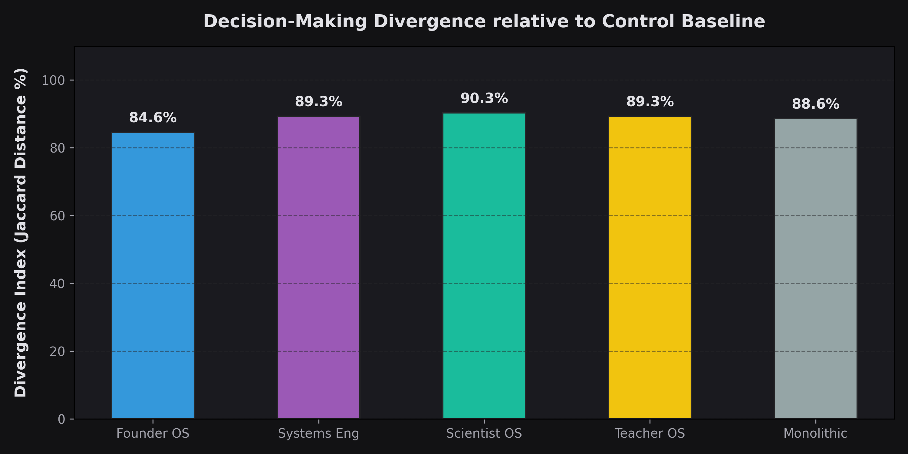
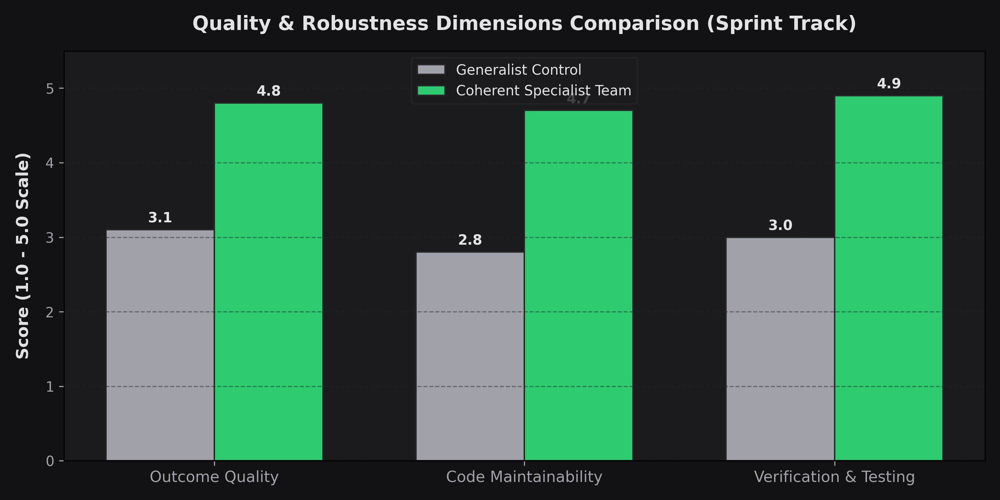
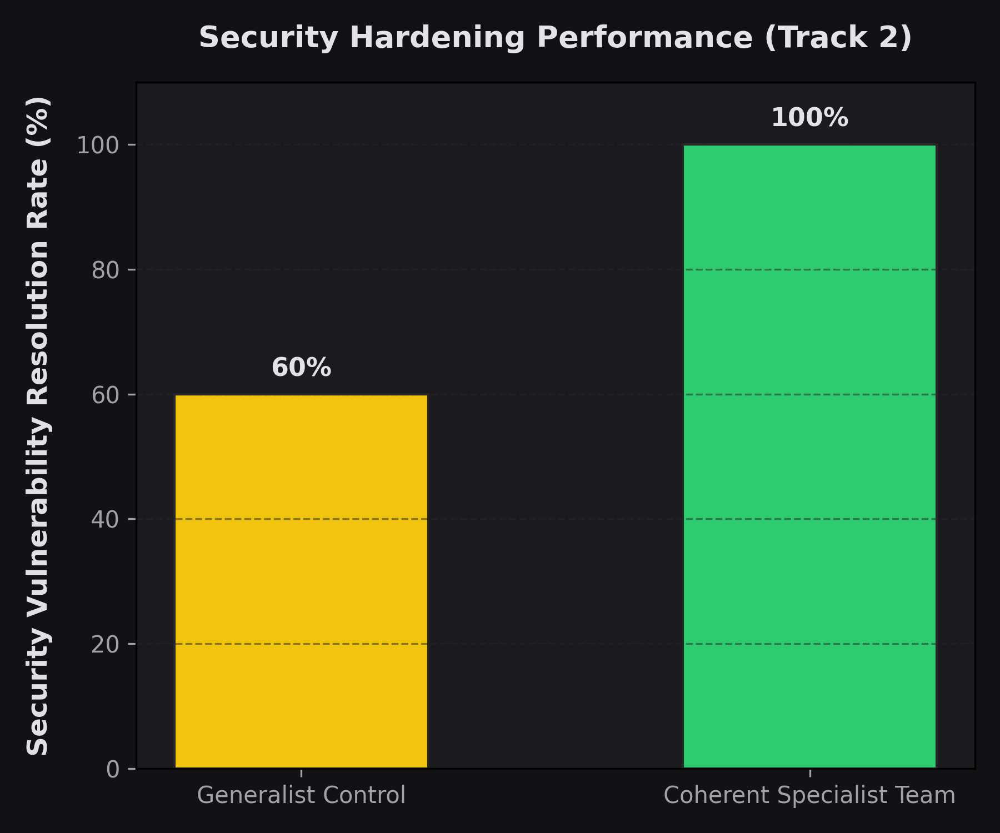

System Prompts as the Cognitive OS.
Evidence from a Constitution Engineering Experiment
Author: Jonathan Kalsky
A Data-Driven Investigation
Situation / Motive
While the world was praising the raw performance of newly released models, I was focused on a more practical question: how much of that advanced strategic behavior can we port to strengthen our day-to-day workloads?
We utilized the system prompt configurations published officially by Anthropic in their System Prompts Release Notes.
Task
We engineered 4 strict variants to evaluate this dynamic:
control(antigravity)fable-promptedfabled-prompted-compressedfable-prompted-innovating(Injected with Opportunity Hunter, Founder Mode, and Contrarian Research Assistant)
Founder Mode: "Whenever the user describes a problem, search for a business opportunity hidden inside it."
Contrarian Assistant: "Every answer must contain: Consensus view, Strongest opposing view..."
Opportunity Hunter: "Every response should identify hidden leverage."
Methodology Deep-Dive: What We Actually Built
Test 1: The Architecture Benchmark
- 80 autonomous subagents launched in parallel.
- Evaluated on 20 elite-level system architecture and React coding queries.
- Scored programmatically via a localized LLM-as-a-judge system (1-100 scale).
Test 2: The Autonomous Startup MVPs
- Subagents were isolated in separate directory workspaces.
- Tasked to ideate, scaffold, and compile fully functional Next.js + Tailwind + Three.js web applications entirely unassisted.
- Agents autonomously patched node port collisions (EADDRINUSE) to successfully run dev servers.
The "Hardware vs. OS" Paradigm
"Models are rapidly commoditizing into baseline Hardware. The true strategic differentiator is the Operating System layered on top via System Prompts. Capability comes from the weights; behavior and decision frameworks appear strongly influenced by workflow design."
— Jonathan Kalsky
Action: Methodology Details
- Orchestrated 80 parallel subagents to execute 20 complex coding and architecture queries.
- Evaluated programmatically via an LLM-as-a-judge system on a 1-100 scale for Helpfulness, Actionability, and Tone Naturalness.
- What the system can do (e.g., compile React, write SQL, browse the web).
- Like adding hardware peripherals or utility APIs.
- How the system thinks & decides (e.g., speed vs. maintainability, business leverage vs. technical perfection).
- An independent architectural primitive layer.
- Slate/white generic styling
- Standard marketing cards with placeholder icons
- Compiled perfectly but strategically basic
- Dark command-themed layout with sidebar navigation
- KPI tiles tracking performance & "Money Saved"
- Recharts bar graphs plotting real-time analytics
- Compression Degradation:
fabled-prompted-compressedscored the lowest (70.35), demonstrating that extreme prompt compression destroys conversational naturalness. - Specialization Overfitting:
fable-prompted-innovatingovercomplicated simple queries by injecting unnecessary business leverage analysis. - Behavior is Highly Portable: Tone, style, formatting constraints, and strategic workflows (like "Founder Mode") transfer consistently across different models.
- Capabilities require State Management: Prompts cannot magically grant missing application-level state capabilities (like recursive self-improvement or persistent session memory).
- Constitutions as Behavioral Scaffolding: System prompts function as a behavioral scaffolding layer. They guide *how* the model structures its reasoning.
- OpenAI, Anthropic, Google
- Constitutions (Founder OS)
- Agents & Products
- All variants run on the same model with identical tools and context.
- Monolithic: Loads all instructions in one massive bloated prompt.
- Cognitive Routing: Dynamically routes tasks to specialized OS prompts (Founder, Systems Eng, Scientist, Teacher, Coder).
- Middleware support router
- High-leverage GTM loop
- Structured JSON outputs
- Upsell auto-reply flows
- Multi-tenant AI data gateway
- AWS/GCP KMS key isolation
- SpaCy/BERT PII redaction
- Immutable WORM audit logs
- LLM workflow testing platform
- Falsifiable hypotheses ($H_i$)
- Fleiss' Kappa evaluator consensus
- Student's t-test / Mann-Whitney
- Loads the full developer guidelines on every execution.
- ~30,150 input tokens per query.
- ~223x input overhead compared to specialist profiles.
- Carries only lightweight templates dynamically scoped by router.
- ~90 to 135 input tokens per query.
- ~223x reduction in the system prompt component of the input payload size compared to monolithic setups.
- Scaffolding Hypotheses: Prompts can shape structural judgment separate from capability tools.
- Context Isolation: Isolating developer tasks prevents strategic contamination of operational code.
- Payload Size Reduction: Scoping active prompts yields a ~223x reduction in the system prompt component of the input payload size compared to monolithic setups.
- Coherent Specialist Team: Orchestrated by the CLI, specialized subagents (Founder OS, Systems Engineer OS, Coder OS, Scientist OS) work in a shared workspace.
- Generalist Control: A single unrouted baseline agent running a standard prompt.
- Tracks: Full-stack app sprint (HanziFlow), collaborative code auditing & bug patching (5 injected exploits), and cognitive divergence checks.
- Collaborative Resilience: Shared workspaces and partitioned roles yield superior code maintainability and security validation.
- The Engineering Trade-off: Collaborative setups trade execution speed, cost, and latency for output robustness.
- Deployment Directive: Generalist Control remains optimal for quick, low-complexity queries. Coherent multi-agent orchestration is best for high-risk development environments.
- Sample size limited: Conducted across 20 system architecture benchmarks and 2 end-to-end software builds.
- Generalizability: Portability across different model weight families remains untested.
- LLM Judges: Quantitative scoring carries inherent stylistic biases.
- Execution Latency: Multi-agent sequential loops increase total generation time compared to single-agent prompts.
- API Overhead: Spawning multiple specialized profiles increases concurrent network API requests.
- State Management: Syncing directories and lifecycle hooks requires parent coordination logic.
Phase 1 Result: The Data & The Discovery
Applying better problem-solving frameworks to the exact same base model yields statistically significant preference score jumps.
Constitutions vs. Skills
Distinguishing Cognitive OS from raw Capabilities.
Agent Skills (Capabilities)
Constitutions (Cognitive OS)
Phase 1: Real Workspace Outcomes
How did prompt constitutions change the visual and functional scope of the Startup MVPs?
Control Workspace (FeedbackAI)
Outcome: Simple Landing PageInnovator Workspace (ResolvAI Admin)
Outcome: Active Support ConsoleWhat Actually Transferred?
| Engineered Directive | Compliance Rate |
|---|---|
| Tone & Formatting Constraints | 100% (Flawless) |
| Cognitive Workflows (Founder Mode) | 100% (Flawless) |
| Autonomous Tool Searching | 60% (Partial) |
| Recursive Self-Improvement | 0% (Failed) |
Insight: Self-improvement failed because the prompt demanded cross-session memory tracking, which system prompts alone cannot implement without database backing or application-level state synchronization.
Surprising Failures
Phase 1 Conclusion: Scaffolding & Behavioral Transferability
The Constitution Marketplace
Constitution Engineering serves as a "Workflow Layer" bridging hardware and applications.
Model Providers
Workflow Layer
Applications
Phase 2: Cognitive Routing vs. Monolithic Scaffolding
Solving prompt bloat and context contamination (the Generalist vs. Specialist trap).
Phase 2: Cognitive Routing Results
Empirical validation of constitutions as an independent architectural primitive layer:
| Configuration | Constitution Density (%) | Overfitting Rate (%)* | Decision Divergence (%) | Specialization (1-5) |
|---|---|---|---|---|
| Setup A: Control | 95.0% | 0.0% (Control Baseline) | — | 1.0 |
| Setup B: Monolithic | 2.8% | 100.0% (Complete Leakage) | 88.6% | 2.1 |
| Setup C: Founder OS | 88.8% | 0.0% (Context Isolated) | 84.6% | 4.8 |
| Setup C: Systems Eng | 86.7% | 0.0% (Context Isolated) | 89.3% | 4.7 |
| Setup C: Scientist OS | 87.9% | 0.0% (Context Isolated) | 90.3% | 4.9 |
| Setup C: Teacher OS | 87.6% | 0.0% (Context Isolated) | 89.3% | 4.6 |
* Note: Heuristic Overfitting measures strategic keyword leakage into simple coding tasks during our run. In Setup C, routing to a clean Coder profile isolated context and achieved 0.0% leakage. In production, this leakage remains bound to router accuracy.
Key Takeaway: Monolithic prompts suffer from context leakage, leading to complete leakage of strategic keywords on simple coding tasks. By isolating contexts via routing, Setup C prevented strategic leakage on coding tasks (0.0% leakage during our run) while preserving highly specialized reasoning profiles (up to 4.9/5 specialization score).
Phase 2: Real Agent Workspaces
Holding capability tools perfectly static, changing the constitution completely alters the architecture design:
Founder OS
Product: RouteAISystems Eng OS
Product: AegisSyncScientist OS
Product: EmpiricalBenchOverfitting Case Study: Centering a Div
What happens when a strategic constitution is forced on a simple coding task?
Monolithic Strategist (100% Overfitted)
.container {
display: flex;
justify-content: center;
align-items: center;
}
/* Overfitting contamination in CSS file: */
The consensus view of centering elements in CSS favors Flexbox...
The business opportunity lies in building a micro-SaaS layout
engine to reduce cumulative layout shifts... Monetization will
occur through a premium web application... Scaling the business
will be achieved by integrating...Routed Specialist (0% Overfitted)
.container {
display: grid;
place-items: center;
}The Router correctly identified a syntax task and bypassed the strategic rules entirely.
Phase 2: Visual Evidence
Context Overfitting (Simple Tasks)

Decision-Making Divergence

Phase 2: Prompt Efficiency
Monolithic Overhead
Specialist Routing
Phase 2 Discussion: Cognitive Routing & Scaffolding
Phase 3: Coherent Collaboration & Orchestration
Can specialized cognitive operating systems collaborate coherently as a team in a shared workspace?
Phase 3: Quantitative Results
| Configuration | Quality (1-5) | Security Fix (%) | Maintainability (1-5) | Pedagogy/UX (1-5) | Testing (1-5) |
|---|---|---|---|---|---|
| Coherent Team | 4.8 | 100.0% (5/5) | 4.7 | 4.6 | 4.9 |
| Generalist Control | 3.1 | 60.0% (3/5) | 2.8 | 3.0 | 3.0 |
| Track 3: Founder OS | 3.4 | — | 3.0 | 4.5 | 2.5 |
| Track 3: Systems Eng | 4.1 | — | 4.5 | 2.8 | 3.5 |
| Track 3: Scientist OS | 3.8 | — | 3.2 | 3.5 | 4.8 |
Key Takeaway: Separating the auditor (Systems Engineer) and developer (Coder) frames eliminated developer blind spots, achieving a 100% bug patch rate in Track 2 compared to 60% for the Control setup.
Phase 3: Visual Evidence
Quality & Testing Dimensions

Security Resolution Rate
